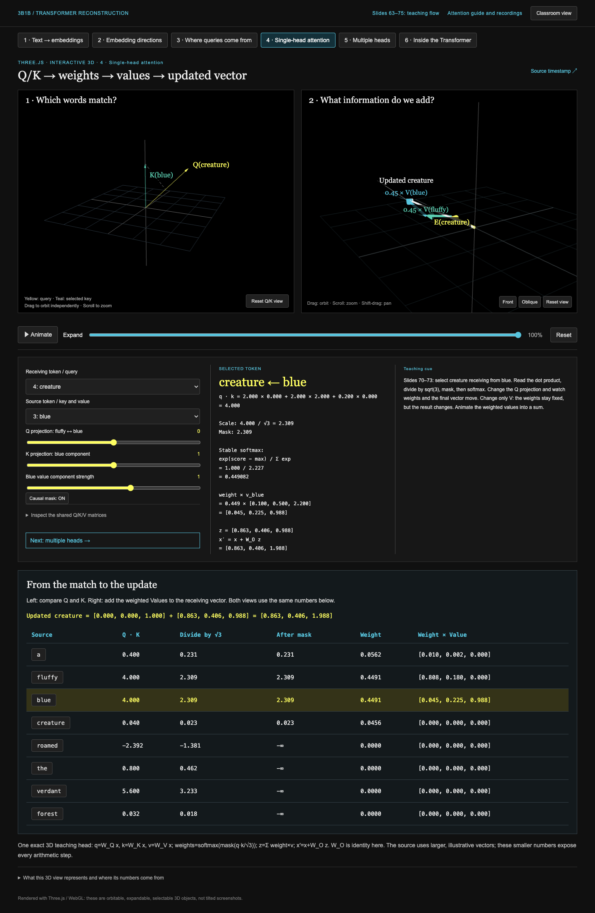

Open the revised lessonTwo 3D views, one page
Q/K matching and the Value sum now have independent WebGL canvases and cameras. Arithmetic is ordinary HTML below them, not a textured plane inside the scene.
Chrome verification: 23 checks passed, including separate pointer-driven orbits, exact cumulative Value-arrow positions, Q/V interventions, masking, animation endpoints, all six views, real token selection, positional embeddings, mobile overflow, resize, and absence of browser errors.
The unchanged toy calculation is exact; its three-dimensional numbers are deliberately chosen. This is a reconstruction of the explanatory idea, not an exact reproduction of every 3Blue1Brown shot. Older recordings predate this layout.
Try it
- Drag either 3D view. The other camera and the HTML table remain independent.
- Choose creature receiving from blue. Change the Q slider: both weights and the final arrow change.
- Reset and change only Value strength: weights remain fixed.
- Press Animate: the weighted arrows move into a tip-to-tail sum.
